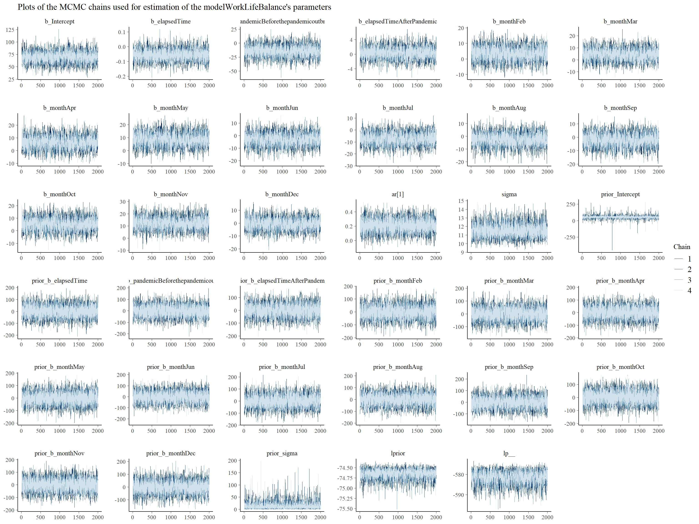
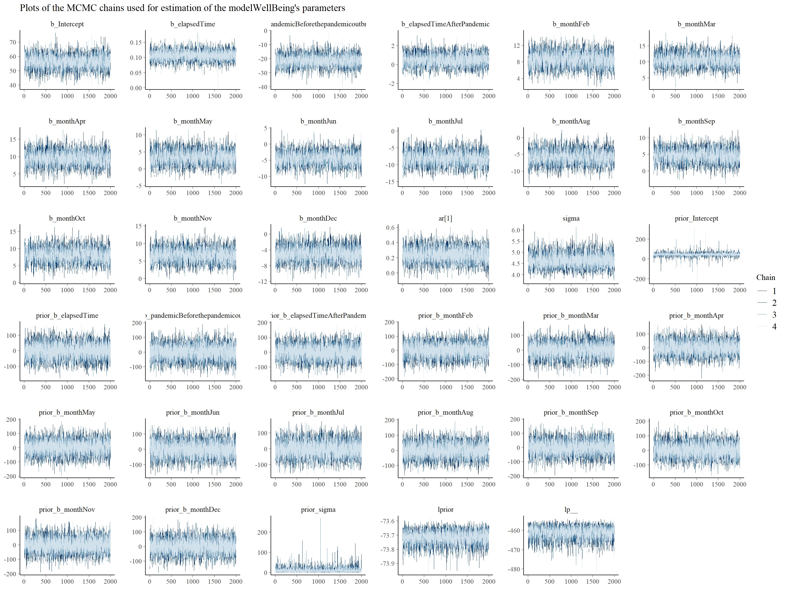
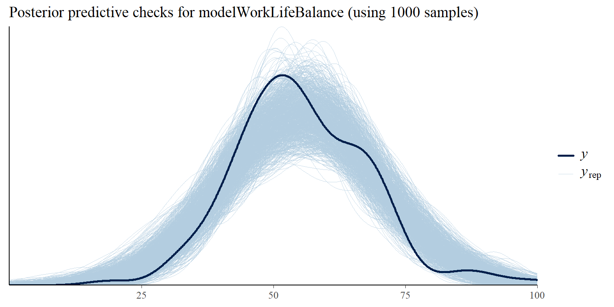
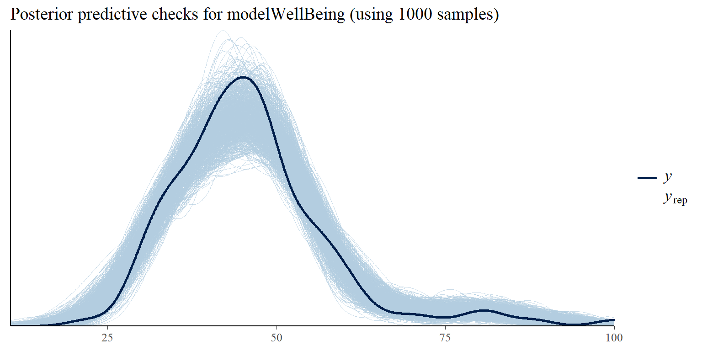
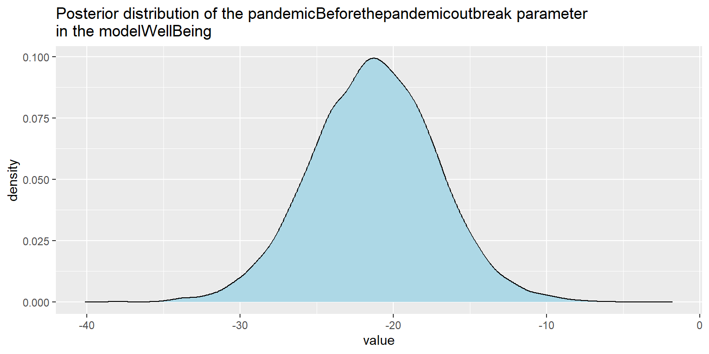
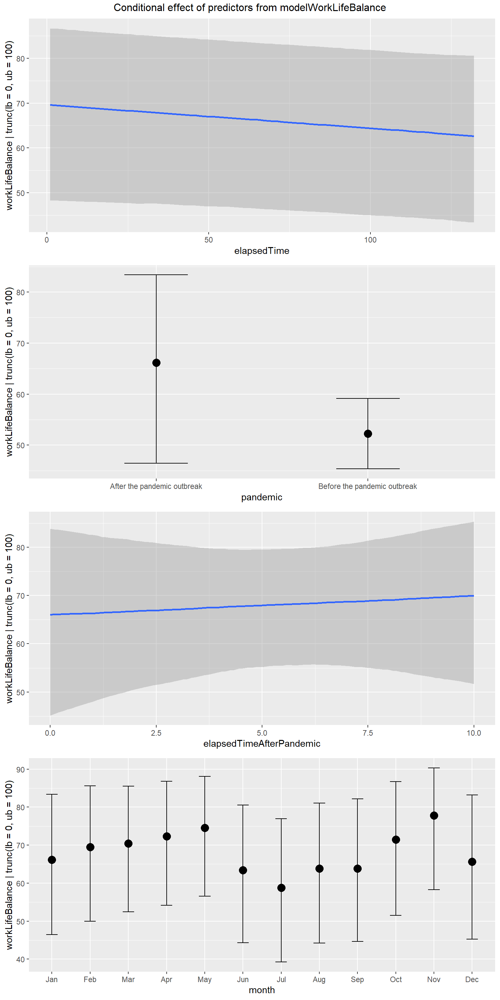

The turn of the year, which is full of all sorts of resolutions to change for the better in our private lives and in our organizations, is a good time to remind ourselves that analytic tools can be very helpful in our efforts to make these resolutions come true. One way they can help us is by verifying that we have really achieved our stated goals and that we are not just fooling ourselves in believing so. You probably know the Richard Feynman’s famous principle of critical thinking…

One of the tools that can help with that is segmented regression analysis of interrupted time series data (thanks to Masatake Hirono for pointing me to the existence of this tool). It allows us to model changes in various processes and outcomes that follow interventions, while controlling for other types of changes (e.g. trends and seasonality) that may have occurred regardless of the interventions. It is thus very useful for data analysis conducted within studies with a quasi experimental study design that are in the organizational context the best alternative to the “gold standard” of randomized controlled trials (RCTs) that are not always feasible or politically acceptable.
For illustration, let’s use this tool for testing hypothesis about the people’s increased interest in topics related to work-life balance and well-being due to COVID-19 pandemic and following changes in the way people work. As a proxy measure of this interest we will use worldwide search interest data over the last 10 years from Google Trends using search terms “work-life balance” and “well-being” (see Fig. 1 and 2 below).
 Fig. 1: Interest in “work-life balance” topic over the last 10 years measured as a search interest by Google Trends. The numbers represent search interest relative to the highest point on the chart for the given region and time. A value of 100 is the peak popularity for the term. A value of 50 means that the term is half as popular. A score of 0 means that there was not enough data for this term.
Fig. 1: Interest in “work-life balance” topic over the last 10 years measured as a search interest by Google Trends. The numbers represent search interest relative to the highest point on the chart for the given region and time. A value of 100 is the peak popularity for the term. A value of 50 means that the term is half as popular. A score of 0 means that there was not enough data for this term.
 Fig. 2: Interest in “well-being” topic over the last 10 years measured as a search interest by Google Trends. The numbers represent search interest relative to the highest point on the chart for the given region and time. A value of 100 is the peak popularity for the term. A value of 50 means that the term is half as popular. A score of 0 means that there was not enough data for this term.
Fig. 2: Interest in “well-being” topic over the last 10 years measured as a search interest by Google Trends. The numbers represent search interest relative to the highest point on the chart for the given region and time. A value of 100 is the peak popularity for the term. A value of 50 means that the term is half as popular. A score of 0 means that there was not enough data for this term.
Based solely on the visual inspection of the graphs, it is pretty difficult to tell whether there was some effect of COVID-19 or not, especially in the case of work-life balance (for the purpose of this analysis, the beginning of the pandemic is assumed to have started in March 2020). For sure it’s not a job for “inter-ocular trauma test” when the existence of the effect hits you directly between the eyes. We need to rely here on inferential statistics and its ability to help us with distinguishing signal from noise.
Before conducting the analysis itself, we need to wrangle the data from Google Trends a little bit using the recipe presented in the Wagner, Zhang, and Ross-Degnan’s paper. Specifically, we need the following five variables (or six, given that we have two dependent variables):
- search interest – numerical variable representing search interest relative to the highest point on the chart for the given region and time; this variable is truncated within the interval between values of 0 and 100; a value of 100 is the peak popularity for the term; a value of 50 means that the term is half as popular; a score of 0 means that there was not enough data for this term; this variable serves as a dependent (criterion) variable;
- elapsed time – numerical variable representing time measured as a number of months that elapsed from the beginning of the time series; this variable enables estimation of the size and direction of the trend in the data;
- pandemic – dichotomic variable indicating the presence/absence of pandemic; as already mentioned above, for the purpose of this analysis, the beginning of the pandemic is assumed to have started in March 2020; this variable enables testing the hypothesis about the effect of pandemic on people’s interest in in work-life balance and well-being;
- elapsed time after pandemic onset – numerical variable representing time measured as a number of months that elapsed from the beginning of pandemic;
- month – categorical variable representing specific month within a year; this variable enables controlling for effect of seasonality.
# uploading library for data manipulation
library(tidyverse)
# uploading data
dfWorkLifeBalance <- readr::read_csv("./workLifeBalanceGoogleTrendData.csv")
dfWellBeing <- readr::read_csv("./wellBeingGoogleTrendData.csv")
dfAll <- dfWorkLifeBalance %>%
# joining both datasets
dplyr::left_join(
dfWellBeing, by = "Month"
) %>%
# changing the format and name of Month variable
dplyr::mutate(
Month = stringr::str_glue("{Month}-01"),
Month = lubridate::ymd(Month)
) %>%
dplyr::rename(
date = Month
) %>%
# creating new variable month
dplyr::mutate(
month = lubridate::month(date,label = TRUE, abbr = TRUE),
month = factor(month,
levels = c("Jan","Feb","Mar","Apr","May","Jun","Jul","Aug","Sep","Oct","Nov","Dec"),
labels = c("Jan","Feb","Mar","Apr","May", "Jun","Jul","Aug","Sep","Oct","Nov","Dec"),
ordered = FALSE)
) %>%
# arranging data in ascending order by date
dplyr::arrange(
date
) %>%
# creating new variables
dplyr::mutate(
elapsedTime = row_number(),
pandemic = case_when(
date >= '2020-03-01' ~ 1,
TRUE ~ 0
),
elapsedTimeAfterPandemic = cumsum(pandemic)
) %>%
# changing order of variables in df
dplyr::select(
date, workLifeBalance, wellBeing, elapsedTime, month, pandemic, elapsedTimeAfterPandemic
)Here is a table with the resulting data we will use for testing our hypothesis.
Table 1: Final dataset used for testing hypothesis about impact of COVID-19 pandemic on people’s interest in work-life balance and well-being.
Now let’s fit the data to the model and check what it tells us about the effect of pandemic on people’s interest in work-life balance and well-being. We will use brms r package that enables making inferences about statistical models’ parameters within Bayesian inferential framework.
Given that we are dealing with correlated and truncated data, there are two specific terms – autocorrelation and truncation term – in the models that treats these specific characteristics of our data. We also need to specify some additional parameters (e.g. chains, iter or warmup) of the Markov Chain Monte Carlo (MCMC) algorithm that generates posterior samples of our models’ parameters.
Bayesian framework also enables us to specify priors for estimated parameter and through them include our domain knowledge in the analysis. The specified priors are important for both parameter estimation and hypothesis testing as they define our starting information state before we take into account collected data. Here we will use rather wide, uninformative, and only mildly regularizing priors (it means that the results of the inference will be very close to the results of standard, frequentist parameter estimation/hypothesis testing).
# uploading library for Bayesian statistical inference
library(brms)
# specifying wide, uninformative, and only mildly regularizing priors for predictors in both models
priors <- c(set_prior("normal(0,50)", class = "b", coef = "elapsedTime"),
set_prior("normal(0,50)", class = "b", coef = "elapsedTimeAfterPandemic"),
set_prior("normal(0,50)", class = "b", coef = "pandemic"),
set_prior("normal(0,50)", class = "b", coef = "monthApr"),
set_prior("normal(0,50)", class = "b", coef = "monthAug"),
set_prior("normal(0,50)", class = "b", coef = "monthDec"),
set_prior("normal(0,50)", class = "b", coef = "monthFeb"),
set_prior("normal(0,50)", class = "b", coef = "monthJul"),
set_prior("normal(0,50)", class = "b", coef = "monthJun"),
set_prior("normal(0,50)", class = "b", coef = "monthMar"),
set_prior("normal(0,50)", class = "b", coef = "monthMay"),
set_prior("normal(0,50)", class = "b", coef = "monthNov"),
set_prior("normal(0,50)", class = "b", coef = "monthOct"),
set_prior("normal(0,50)", class = "b", coef = "monthSep"))
# defining the statistical model for work-life balance
modelWorkLifeBalance <- brms::brm(
workLifeBalance | trunc(lb = 0, ub = 100) ~ elapsedTime + pandemic + elapsedTimeAfterPandemic + month + ar(p = 1),
data = dfAll,
family = gaussian(),
prior = priors,
chains = 4,
iter = 3000,
warmup = 1000,
seed = 12345,
sample_prior = TRUE
)
# defining the statistical model for well-being
modelWellBeing <- brms::brm(
wellBeing | trunc(lb = 0, ub = 100) ~ elapsedTime + pandemic + elapsedTimeAfterPandemic + month + ar(p = 1),
data = dfAll,
family = gaussian(),
prior = priors,
chains = 4,
iter = 3000,
warmup = 1000,
seed = 678910,
sample_prior = TRUE
)Before making any inferences, we should make some sanity checks to be sure that the mechanics of the MCMC algorithm worked well and that we can use generated posterior samples for making inferences about our models’ parameters. There are many ways for doing that, but here we will use only visual check of the MCMC chains. We want plots of these chains look like hairy caterpillar which indicates convergence of the underlying Markov chain to stationarity and convergence of Monte Carlo estimators to population quantities, respectively. As can be seen in the Graph 1 and 2 below, in the case of both models we can observe wanted characteristics of the MCMC chains described above. (For additional MCMC diagnostics procedures, see for example Bayesian Notes from Jeffrey B. Arnold.)

Graph 1: Trace plots of Markov chains for individual parameters of the modelWorkLifeBalance.

Graph 2: Trace plots of Markov chains for individual parameters of the modelWellBeing.
It is also important to check how well the models fit the data. We can use for this purpose posterior predictive checks that use specified number of sampled posterior values of models’ parameters and show how well the fitted models predict observed data. We can see in Graphs 3 and 4 that both models fit the observed data reasonably well.

Graph 3: Posterior predictive checks comparing simulated/replicated data under the fitted modelWorkLifeBalance with the observed data.

Graph 4: Posterior predictive checks comparing simulated/replicated data under the fitted modelWellBeing with the observed data.
Now, after having sufficient confidence that - using the terminology from the Richard McElreath’s book Statistical Rethinking - our “small worlds” can pretty accurately mimic the data coming from our real,“big world”, we can use our models’ parameters to learn something about our research questions. Our primary interest is in the coefficient value of the pandemic term in our models. It expresses how much and in what direction people’s search interest in work-life balance and well-being changed after the onset of pandemic.
In Graph 5 and 6 we can see posterior distributions of three selected parameters of our two models. In both cases the posterior distribution of the pandemic term is (predominantly or completely) on the right side of the zero value, which supports the claim about existence of the effect of pandemic on people’s increased search interest in work-life balance and well-being. As is apparent from the graphs, for well-being (Graph 6) this evidence is much stronger than for work-life balance, which corresponds to impression we might have when looking at the original Google Trends charts shown in Fig. 1 and 2.
Graph 5: Visualization of the posterior distributions of selected parameters of the modelWorkLifeBalance.

Graph 5: Visualization of the posterior distributions of selected parameters of the modelWellBeing.
To generate more summary statistics about posterior distributions (and also some diagnostic information like Rhat or ESS), we can use well-known summary() function.
# generating a summary of the results for modelWorkLifeBalance
summary(modelWorkLifeBalance)
Family: gaussian
Links: mu = identity; sigma = identity
Formula: workLifeBalance | trunc(lb = 0, ub = 100) ~ elapsedTime + pandemic + elapsedTimeAfterPandemic + month + ar(p = 1)
Data: dfAll (Number of observations: 132)
Samples: 4 chains, each with iter = 3000; warmup = 1000; thin = 1;
total post-warmup samples = 8000
Correlation Structures:
Estimate Est.Error l-95% CI u-95% CI Rhat Bulk_ESS Tail_ESS
ar[1] 0.21 0.09 0.03 0.39 1.00 6929 5764
Population-Level Effects:
Estimate Est.Error l-95% CI u-95% CI Rhat
Intercept 55.60 4.19 47.36 64.02 1.00
elapsedTime -0.05 0.04 -0.13 0.02 1.00
pandemic 14.03 9.96 -5.22 34.09 1.00
elapsedTimeAfterPandemic 0.40 1.59 -2.68 3.54 1.00
monthFeb 3.49 4.44 -5.38 12.19 1.00
monthMar 4.51 4.92 -5.18 14.20 1.00
monthApr 6.61 4.97 -3.26 16.50 1.00
monthMay 8.82 4.97 -1.01 18.64 1.00
monthJun -2.82 4.98 -12.55 6.97 1.00
monthJul -7.31 5.05 -17.35 2.48 1.00
monthAug -2.45 5.00 -12.29 7.46 1.00
monthSep -2.20 5.02 -12.29 7.70 1.00
monthOct 5.37 4.96 -4.41 15.24 1.00
monthNov 12.36 4.95 2.83 22.13 1.00
monthDec -0.63 4.60 -9.53 8.49 1.00
Bulk_ESS Tail_ESS
Intercept 2982 4366
elapsedTime 6859 5161
pandemic 5274 5053
elapsedTimeAfterPandemic 5271 5117
monthFeb 3975 5259
monthMar 3297 4998
monthApr 3343 4860
monthMay 3024 4502
monthJun 3470 4861
monthJul 3385 4434
monthAug 3338 4583
monthSep 3226 5026
monthOct 3352 4802
monthNov 3466 4560
monthDec 3670 5099
Family Specific Parameters:
Estimate Est.Error l-95% CI u-95% CI Rhat Bulk_ESS Tail_ESS
sigma 11.55 0.78 10.16 13.23 1.00 6619 5559
Samples were drawn using sampling(NUTS). For each parameter, Bulk_ESS
and Tail_ESS are effective sample size measures, and Rhat is the potential
scale reduction factor on split chains (at convergence, Rhat = 1).
# generating a summary of the results for modelWellBeing
summary(modelWellBeing)
Family: gaussian
Links: mu = identity; sigma = identity
Formula: wellBeing | trunc(lb = 0, ub = 100) ~ elapsedTime + pandemic + elapsedTimeAfterPandemic + month + ar(p = 1)
Data: dfAll (Number of observations: 132)
Samples: 4 chains, each with iter = 3000; warmup = 1000; thin = 1;
total post-warmup samples = 8000
Correlation Structures:
Estimate Est.Error l-95% CI u-95% CI Rhat Bulk_ESS Tail_ESS
ar[1] 0.24 0.10 0.05 0.43 1.00 6384 5584
Population-Level Effects:
Estimate Est.Error l-95% CI u-95% CI Rhat
Intercept 34.80 1.75 31.35 38.33 1.00
elapsedTime 0.11 0.02 0.07 0.14 1.00
pandemic 21.27 4.22 12.83 29.41 1.00
elapsedTimeAfterPandemic 0.50 0.65 -0.78 1.83 1.00
monthFeb 8.65 1.78 5.18 12.05 1.00
monthMar 10.68 1.99 6.82 14.59 1.00
monthApr 9.59 2.02 5.62 13.43 1.00
monthMay 3.53 2.06 -0.51 7.61 1.00
monthJun -4.34 2.09 -8.51 -0.29 1.00
monthJul -8.03 2.06 -12.15 -4.03 1.00
monthAug -5.73 2.05 -9.75 -1.79 1.00
monthSep 4.59 2.04 0.60 8.50 1.00
monthOct 8.18 2.04 4.16 12.18 1.00
monthNov 6.77 2.01 2.80 10.68 1.00
monthDec -4.92 1.86 -8.65 -1.36 1.00
Bulk_ESS Tail_ESS
Intercept 2771 3898
elapsedTime 8342 5206
pandemic 5207 4944
elapsedTimeAfterPandemic 5357 5211
monthFeb 3455 5359
monthMar 3252 5178
monthApr 3140 5199
monthMay 2825 4470
monthJun 3003 4295
monthJul 2948 4784
monthAug 2855 4792
monthSep 2897 4940
monthOct 2706 4463
monthNov 3340 5019
monthDec 3697 4293
Family Specific Parameters:
Estimate Est.Error l-95% CI u-95% CI Rhat Bulk_ESS Tail_ESS
sigma 4.64 0.31 4.09 5.30 1.00 7570 5941
Samples were drawn using sampling(NUTS). For each parameter, Bulk_ESS
and Tail_ESS are effective sample size measures, and Rhat is the potential
scale reduction factor on split chains (at convergence, Rhat = 1).Given that for work-life balance model the pandemic term’s posterior distribution crosses the zero value, it would useful to know how strong is the evidence in the favor of hypothesis that pandemic term is larger than zero. For that purpose we can extract posterior samples and use them for simple calculation of the proportion of values that are larger/smaller than zero. The resulting proportions show that the vast majority of posterior distribution (approximately 93%) lies above that value.
# extracting posterior samples
samples <- posterior_samples(modelWorkLifeBalance)
# probability of b_pandemic coefficient being higher
sum(samples$b_pandemic > 0) / nrow(samples)
[1] 0.926125
# probability of b_pandemic coefficient being lower than 0
sum(samples$b_pandemic < 0) / nrow(samples)
[1] 0.073875Another option would be to compute Bayes factor that expresses degree to which available data favors our hypothesis in comparison with the null model corresponding to normal prior distribution with the parameters normal(0,50). We can see that Bayes factor (Evid.Ratio in the table below) has value around 12.5 which indicates strong evidence in favor of our hypothesis, in terms of Harold Jeffreys’ scale for interpretation of Bayes factors. In other words, the data should have strong impact on our believe about the existence of pandemic’s effect on people’s search interest in work-life balance.
# computing Bayes factor for hypothesis that pandemic term in the modelWorkLifeBalance is larger than zero
brms::hypothesis(
modelWorkLifeBalance,
"pandemic > 0"
)
Hypothesis Tests for class b:
Hypothesis Estimate Est.Error CI.Lower CI.Upper Evid.Ratio
1 (pandemic) > 0 14.03 9.96 -2.21 30.54 12.54
Post.Prob Star
1 0.93
---
'CI': 90%-CI for one-sided and 95%-CI for two-sided hypotheses.
'*': For one-sided hypotheses, the posterior probability exceeds 95%;
for two-sided hypotheses, the value tested against lies outside the 95%-CI.
Posterior probabilities of point hypotheses assume equal prior probabilities.Graph 6: Visualization of prior and posterior distribution of pandemic term in the modelWorkLifeBalance.
Besides the major hypothesis we may be also interested in…
- overall trend across the last ten years,
- trend after the onset of pandemic, and also
- seasonality of people’s search interest over the months within individual years.
For that purpose we might use, besides the summary statistics and graphs with posterior distributions depicted above, plots showing conditional effects for each of the predictors. From the plots in Graph 7 it is thus clear that in the case of work-life balance searches, the overall trend across the last ten years is decreasing, after the onset of pandemic the trend is rather stagnating, and within individual years the search interest follows the work & holiday seasonality (lower search interest during the holiday parts of the year - June, July, August and December - and higher during the rest of the year). In the case of well-being searches, the seasonality part is similar, but the trends differ - both of them are increasing (see Graph 8).

Graph 7: Visualization of conditional effects of predictors from modelWorkLifeBalance. The predictors are conditioned on the mean in the case of continuous variables and reference category in the case of factors.
Graph 8: Visualization of conditional effects of predictors from modelWellBeing. The predictors are conditioned on the mean in the case of continuous variables and reference category in the case of factors.
In conclusion, we can say that there is some evidence that COVID-19 pandemic prompted people to be more interested in topics related to work-life balance and well-being. I wish us all that we will be able to transform our increased interest in these topics into truly increased quality of our personal and professional lives. It would be a shame not to use that extra incentive many of us have now for making significant change in our lives.
P.S. The whole script is available in Jupyter Notebook on GitHub.